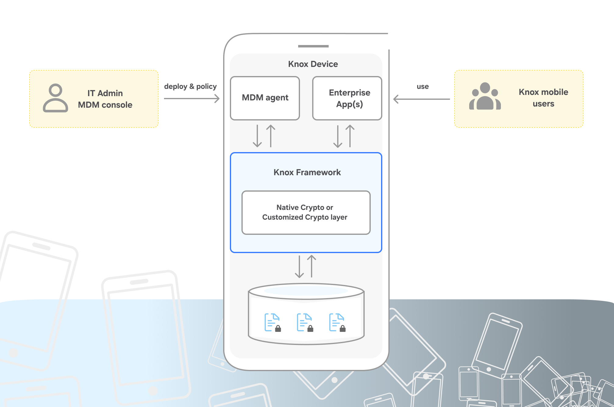
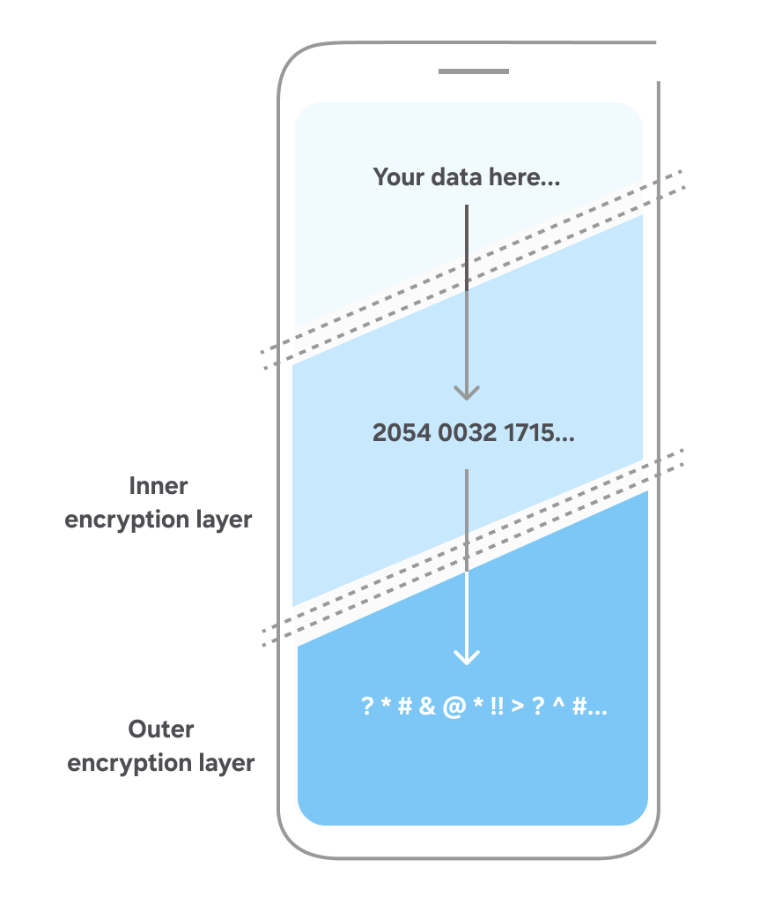
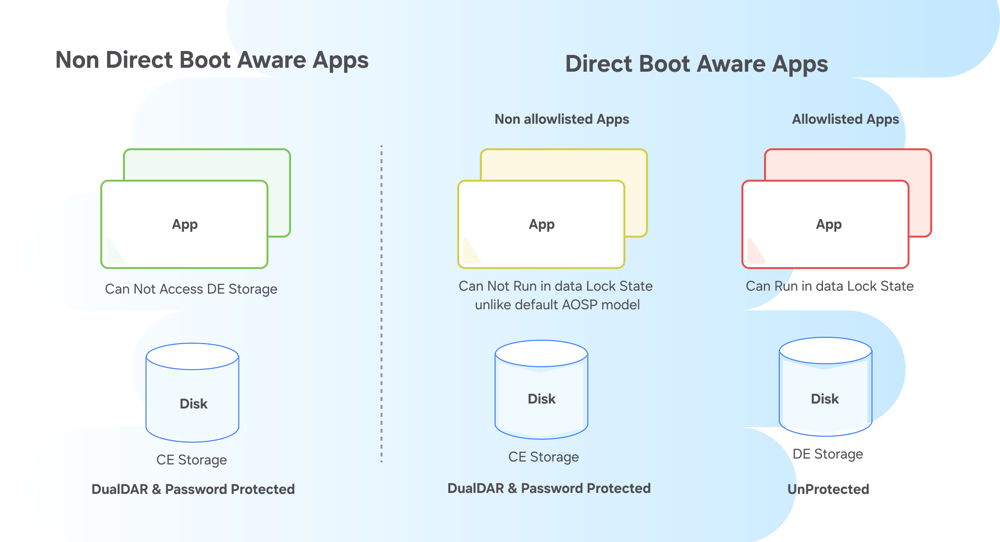

Data Protection
Last updated March 7th, 2025
Data encryption
Your data on a Samsung Knox device is encrypted by default through numerous different layers, supported all the way down to the hardware layer. On Samsung devices, we support Android File Based Encryption’s (FBE) Direct Boot, which maintains encryption of data in two separate locations:
- Credential encrypted storage (CE): The default location where data is stored and is encrypted with a key based on the user’s PIN, password, or pattern. The device encryption key is required to access the Keystore.
- Device encrypted storage (DE): A location where data is encrypted only with a device key generated when the device boots (prior to user login). Applications must register themselves in order to store specific data in this location. This mainly serves apps or services that need to run prior to login, such as urgent notifications and accessibility services.
With Android File Based Encryption, each individual file on a Samsung device uses a unique key that is generated based on a hierarchy of key derivations rooted in the user PIN, passcode, or pattern, and the hardware’s device encryption key. Samsung leverages our secure environment, Arm TrustZone and Knox Vault to derive these keys and ensure no one can access your data without breaking both the user secret and device secret. For credential encrypted storage, rate-limiting is applied to the key derivation process to prevent against brute-force attacks trying to guess the user’s login credentials. For more information, see Android’s documentation on Gatekeeper.
Samsung Knox devices also leverage metadata encryption for each file. This allows for the filesystem metadata and file content (name and body) to be encrypted with separate keys. This is particularly useful for maintaining confidentiality at rest for scenarios where the operating system needs to reason about details such as a file’s size or permissions without completely decrypting the file using the per file key.
Both traditional storage (physical storage on the device) and adoptable storage is supported as part of FBE on Samsung Knox devices. Enterprises leveraging Knox Dual Data-At-Rest Encryption (DualDAR) can add additional encryption layers to this process.
For more information on File Based Encryption and how data is kept secure within Android, see Encryption in Android’s documentation.
Android Enterprise Profiles
This feature is only available on managed devices, and requires the use of an EMM or UEM.
Mobile apps have changed the way we work by providing new channels of communication, innovating customer engagement, and empowering organizations with critical data in real-time. Enterprise IT admins and their users want to leverage one device for both personal and work use cases; a common device provides enhanced convenience while maintaining strong security. This requirement presents a challenge for enterprises, which need to ensure that they fully protect their confidential corporate assets while also preventing liability issues by accidentally interfering with a user’s personal privacy. Specifically, business-critical apps such as Samsung Email, Internet browser, Calendar, and Contacts are often the focus of the enterprise IT admins. Admins can secure these apps within the Work Profile, along with other apps used by the enterprise.
The Knox Platform secures enterprise apps and protects confidential app data by leveraging the following methods:
- App installations and updates: Apps are pre-installed within the mobile device’s secure Work Profile and users can update these apps independent of firmware updates through Google Play.
- App isolation: Apps are sandboxed within the Work Profile, which uses Security Enhancements (SE) for Android to prevent personal apps from interfering with business apps in the Work Profile.
- App permissions: Knox provides app permission monitoring to help users prevent malware from using powerful permissions to gain unauthorized access to the device and Work Profile.
- Data at Rest: Through Knox’s data protection, the files and data used by an app can remain encrypted until device users authenticate when unlocking the device or logging in to the Work Profile. Individual apps can further deploy an app-specific password as another line of defense.
- Data in Transit: App data sent through the public Internet can be secured using Knox’s advanced VPN features.
- DeX integration: Not only are all Samsung native apps optimized to work within DeX, enterprises can secure apps while they’re displayed in DeX.
Work Profile security
This feature is only available on managed devices, and requires the use of an EMM or UEM.
The Android Enterprise Work Profile provides enterprises with a solution to securely isolate work apps and data on a device. The Knox Platform for Enterprise provides more granular management policies for Work Profiles on Samsung devices.
Data transfer
With the isolation of work and personal data, a device user has access to two separate spaces. To increase productivity, it is often necessary to share data between these spaces. For example, it may be necessary to call a work contact saved in the secure workspace while using a phone app in the personal space. With the Work Profile, IT admins have granular management policies to control the movement of data to and from the Work Profile. This data can include apps, files, clipboard data, call logs, contacts, calendar events, bookmarks, notifications, shortcuts, and messaging services (SMS).
Password policy
Setting strict password requirements is essential towards ensuring enterprise data is only accessed by authorized individuals and isn’t subject to trivial attacks. To achieve enterprise needs, the Work Profile supports advanced authentication mechanisms that help further secure enterprise data.
An IT admin can enforce and configure:
- Complex passwords or code schemes by requiring a diverse set of alphanumeric characters, alongside other options.
- Two-factor authentication by requiring facial or fingerprint alongside a password.
Should an issue arise with the work container, an IT admin can lock the container to restrict access. This includes when a device has reached its password attempt limit, is out of compliance, lost, or stolen.
Dual Data-At-Rest Encryption (Dual DAR)
This feature is only available on managed devices, and requires the use of an EMM or UEM.

Protecting Data-At-Rest (DAR) on mobile devices is a major concern for security conscious enterprises. Android File Based Encryption (FBE) addresses this issue by only decrypting data after user authentication, providing per-file and per-data decryption keys, offering per-app password checks, and meeting Mobile Device Fundamentals Protection Profile (MDFPP) requirements for United States government and military use.
Knox DualDAR adds two separate layers of encryption, further meeting the requirements of classified deployments. Knox DualDAR secures all Work Profile data on devices with two distinct levels of encryption. The solution also protects data by restricting apps from writing or saving data to the unencrypted space on the device.
Currently, DualDAR only secures data placed inside the designated Work Profile.
The DualDAR solution provides two separate layers of encryption and key generation; the outer layer and the inner layer. All data placed inside the Work Profile is dually encrypted by both layers:
- Outer layer: The outer layer of the DualDAR solution is built on top of Android’s FBE and enhanced by Samsung to meet MDFPP requirements. This layer is implemented through the System on a Chip (SoC) dedicated to flash storage encryption. In this context, the SoC could be Qualcomm Integrated Crypto Engine (ICE) or Exynos Flash Memory Protector (FMP). Data encryption at this layer is AES 256 XTS and file encryption keys are encrypted using AES-GCM 256.
- Inner layer: The inner layer of encryption is based on a framework that allows an independent third party to install a separate cryptographic module. If no third-party module is installed, a separate inner layer of encryption is secured by a FIPS 140-2 certified cryptographic module included with the Samsung Knox framework.
DualDAR is supported on the Galaxy S10, N10, S20, and subsequent flagship models, and is compatible with Android FBE.

How it works
DualDAR’s inner and outer security layers are independent and protect all information stored in the Work Profile when the device is in a powered off or unauthenticated state. Samsung Knox DualDAR leverages Android File Based Encryption (FBE) architecture.

From an app point of view, the DualDAR Work Profile functions as CE storage. The Knox framework prevents apps from writing data to non-DualDAR protected DE storage. In some cases, an app is aware of both CE and DE storage and needs to write unclassified content to DE storage. In such cases, IT admins can allow that app to write to DE storage. This strict allowlist process ensures that no app can write sensitive or classified content to DE storage without explicit IT admin approval.
When the work container is configured for DualDAR, the secured data is available as follows.
- On a device that supports and is configured for DualDAR, access to app data inside the container is only available when the container is unlocked, that is when the user is actively using the container.
- When the container — or device as a whole — is locked, the container encryption keys are evicted from memory.
- In a data lock state, the Samsung device remains powered on, but the user is locked out of both the work container and the device. All sensitive data is protected in credential encrypted storage within the Work Profile. CE storage is not available until the user provides both their device and Work Profile credentials.
Unique advantages of Knox DualDAR
DualDAR encryption has significant advantages over traditional single layer encryption methods:
- Mitigate risks of implementation flaws: DualDAR reduces the likelihood of unauthorized data access by mitigating the risks that arise from vulnerabilities in a single encryption layer. While one of the many methods available for unauthorized data access may crack through a single layer of encryption, the chances are very low that such vulnerabilities are available on both layers of encryption.
- Mitigate risks of password configuration flaws: Both layers of encryption on a DualDAR configured device use separate and distinct authentication methods to allow access. This separation of authentication methods reduces the likelihood that a single misplaced or misconfigured password is exploited on both layers of data encryption at the same time. Two layers of encryption and two methods of authentication ensure that encrypted data remains protected even in the event of breach on one layer.
- Provide access using strict security evaluation criteria: DualDAR meets the standards laid out in the FIPS 140 certification requirements. Both the inner and outer layers use FIPS 140 certified cryptographic modules. GCM is used to encrypt the key while data is encrypted using XTS or CBC.
- Ease of deployment: DualDAR leverages the in-built Android FBE framework and builds additional layers of security on top of this framework. This solution is available on devices that use a work container in profile owner (PO) mode and fully managed devices that include a PO mode. For more information on configuring this solution for your supported device, see DualDAR architecture.
- Customize the second layer of encryption: DualDAR allows IT admins to implement third party encryption solutions at the inner layer of encryption. This freedom of implementation means IT admins can use and configure any third-party cryptographic modules, including solutions that meet FIPS 140 certification criteria.
- Flexible deployment methods: IT admins can implement and configure DualDAR on all kinds of devices, including Bring Your Own Device (BYOD) and company-issued devices. DualDAR is compatible with both device using a work container in PO mode and fully managed devices that include a PO mode. This flexibility means IT admins can use this superior data security solution on a wide variety of devices within their enterprise.
For more information on DualDAR and its unique design, see DualDAR architecture.
On this page
Is this page helpful?